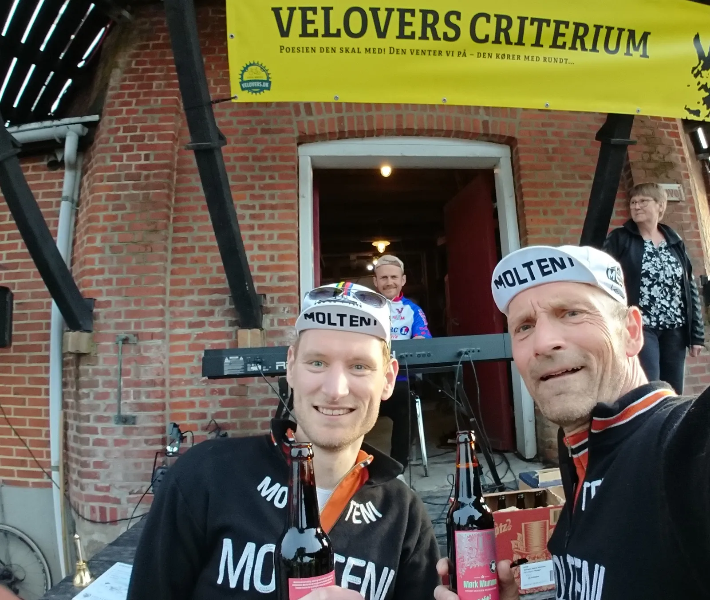

Velovers Uldum Criterium 2019 – drama, orgel og fake news

Løjtnant Sørensen og Kaptajn Bjørnsteen pakkede Spitfire’en og kørte tirsdag aften til criterium i Uldum, hvor Velovers diskede op med nordeuropas hyggeligste criterium. Det blev til en højdramatisk aften, der endte med en 1. og 2. plads.
Skygger af skønhed kommer & går i en uendelig strøm
himlen er høj og vinklerne skrå
præcis som var det i en drøm
En landmand på en Puch Maxi (vist nok på vej til Uldum Kiosk efter en pakke cigaretter) med grøn mæklekasse bagpå, er den eneste trafik på den ca. 7 x 7 km lange rute – kun omgivet af marker og bondegårde.
Starten går – og over 100 ryttere skærer ud gennem sommeraftenen. Der bliver kæmpet om pladserne – og farten stiger hurtigt til midt i 40’erne.
Løjtnant Sørensen kæmper og får god hjælp af Max Fart Nielsen (der pga af trætte fingre stiller op på carboncannondalemedbizzzbizzzelektroniskgearskiftere). I finalen, lige inden Løjtnanten lægger an til spurten, kommer en rytter forbi, og hans stramtsiddende pis unormal studios lycra får fat i løjtnantens styrbugning – der resulterer i, at Løjtnanten må en 5,7m meter ud på en økologisk kornmark.
Går den så går den hvis ikke so what?
tænkte han & så på sit ur
tiden stod stille et kort sekund
og skyggerne gik sig en tur
Kaptajnen ligger på lur. Han kører taktisk, for han ved, at tændstikken skal bruges på det rigtige tidspunkt. Feltet nærmer sig opløbet. Farten øges – og Kaptajnen krummer ned i og over bugningen. Én rykker langt ude fra, Kaptajnen går med i slipstrømmen – og med 100 meter til stregen kommer slangehugget: Kaptajnen vinder spurten og efterlader en sky af orange uld.
Skygger af skønhed længes om kap
i gader uden ende & med
hatten i hånden igen & igen
som skygger uden tilholdssted(Tekst: C.V. Jørgensen, Skygger af skønhed, 1994)

